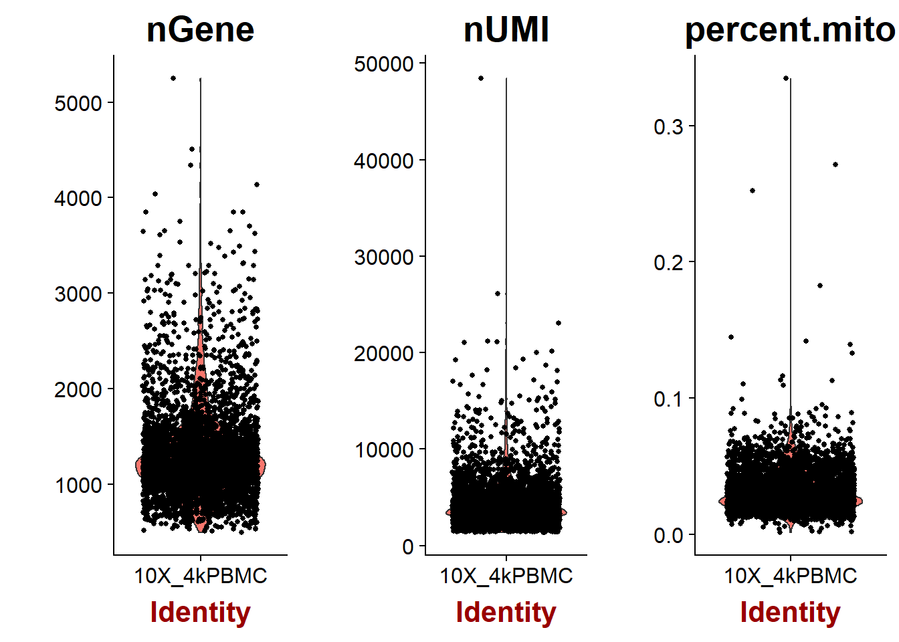
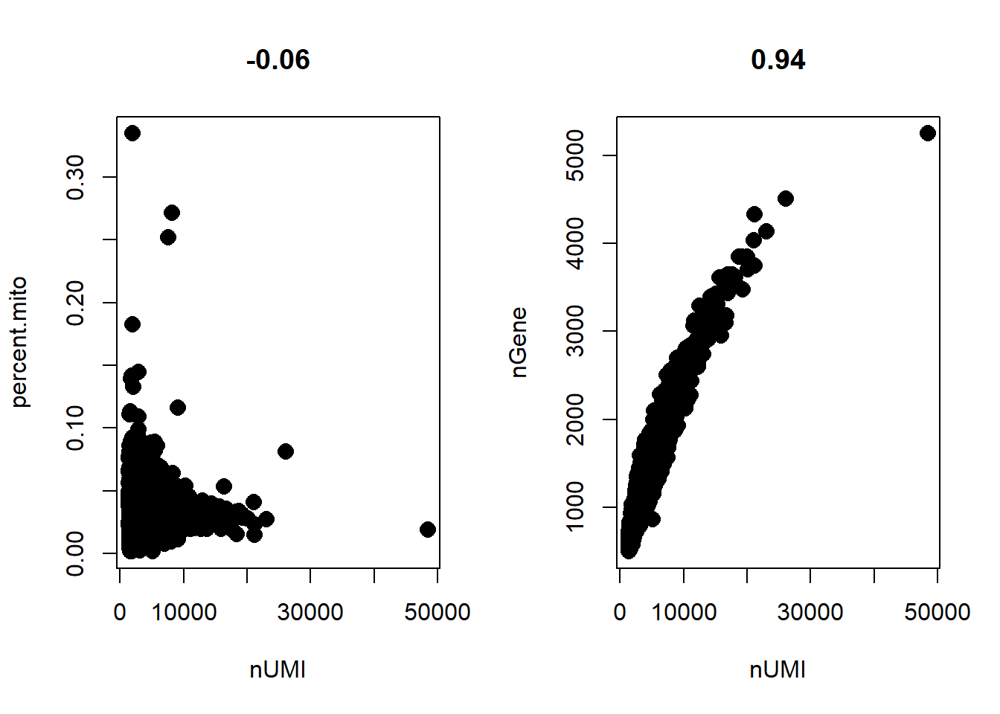
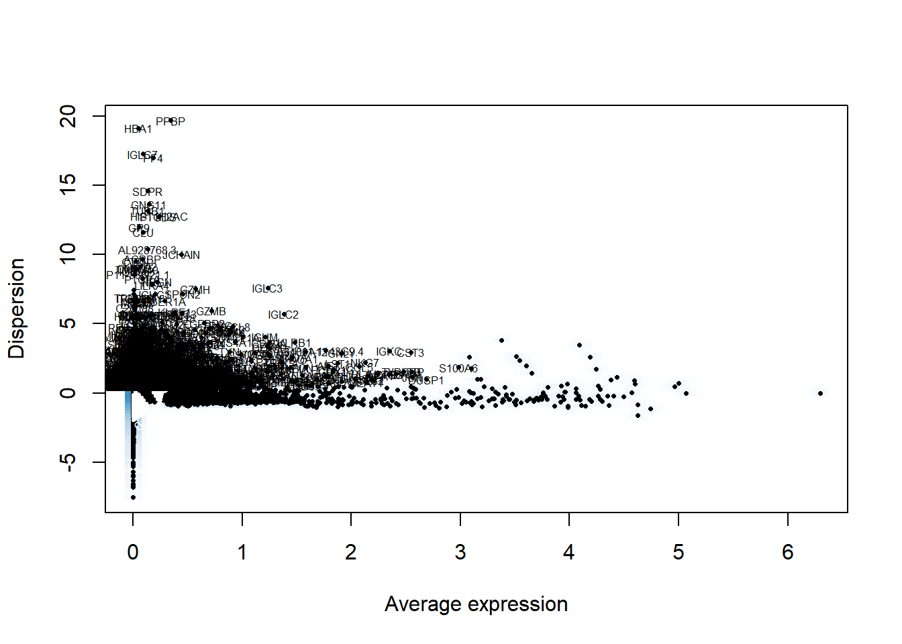
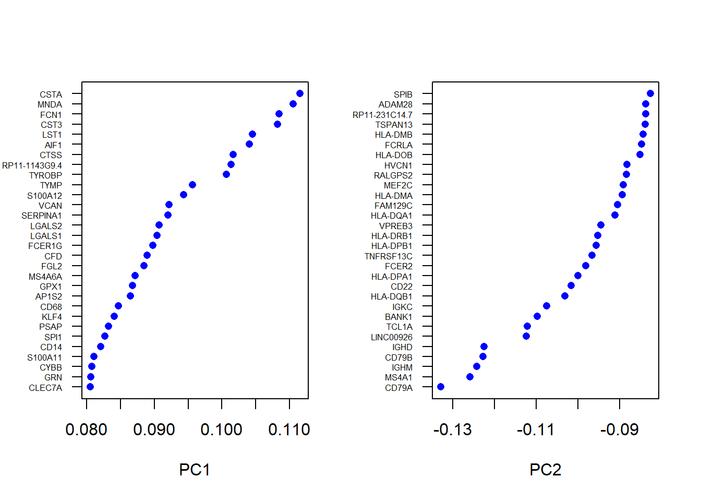
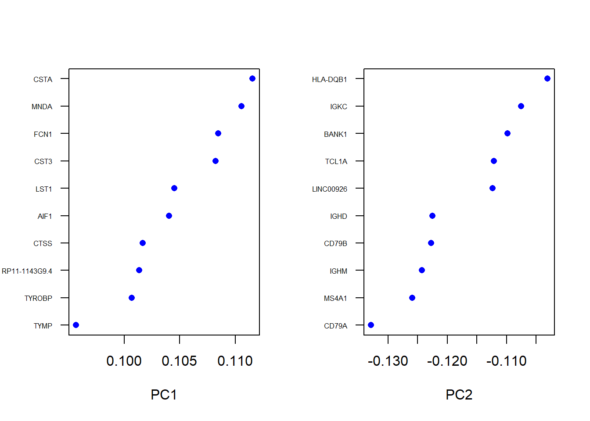
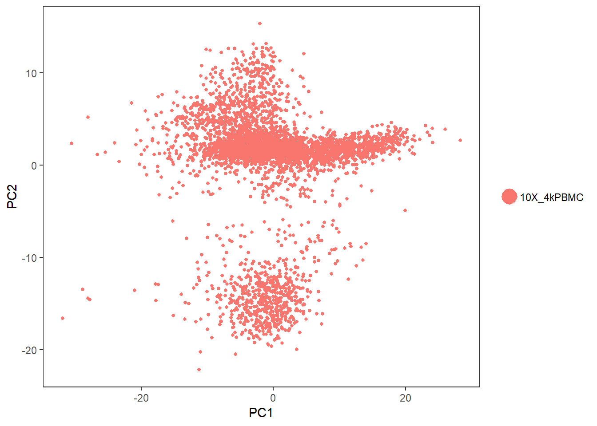

Last updated: 2018-09-26
workflowr checks: (Click a bullet for more information) ✔ R Markdown file: up-to-date
Great! Since the R Markdown file has been committed to the Git repository, you know the exact version of the code that produced these results.
✔ Environment: empty
Great job! The global environment was empty. Objects defined in the global environment can affect the analysis in your R Markdown file in unknown ways. For reproduciblity it’s best to always run the code in an empty environment.
✔ Seed:
set.seed(20180724)
The command set.seed(20180724) was run prior to running the code in the R Markdown file. Setting a seed ensures that any results that rely on randomness, e.g. subsampling or permutations, are reproducible.
✔ Session information: recorded
Great job! Recording the operating system, R version, and package versions is critical for reproducibility.
✔ Repository version: 6bc7634
wflow_publish or wflow_git_commit). workflowr only checks the R Markdown file, but you know if there are other scripts or data files that it depends on. Below is the status of the Git repository when the results were generated:
Ignored files:
Ignored: .Rhistory
Ignored: docs/figure/
Untracked files:
Untracked: (DESKTOP-9MQETIV's conflicted copy 2018-07-26).Rhistory
Untracked: Learning-Thoughts.Rproj
Untracked: data/4k PBMCs from a Healthy Donor/
Untracked: data/filtered_gene_bc_matrices/
Untracked: output/pbmc3k_final.rds
Untracked: output/pbmc_tutorial.rds
Unstaged changes:
Deleted: Learning. Thoughts.Rproj
Modified: analysis/long-read-seq-CACNA1C.Rmd
Modified: analysis/single-cell-RNAseq.Rmd
| File | Version | Author | Date | Message |
|---|---|---|---|---|
| Rmd | 6bc7634 | Denny Shin | 2018-09-26 | added 4kpbmc and zombie lif article |
4k PBMC single cell analysis
I will follow along with Seurat
library(Seurat)Warning: package 'Seurat' was built under R version 3.5.1Loading required package: ggplot2Warning: package 'ggplot2' was built under R version 3.5.1Loading required package: cowplotWarning: package 'cowplot' was built under R version 3.5.1
Attaching package: 'cowplot'The following object is masked from 'package:ggplot2':
ggsaveLoading required package: Matrixlibrary(dplyr)Warning: package 'dplyr' was built under R version 3.5.1
Attaching package: 'dplyr'The following objects are masked from 'package:stats':
filter, lagThe following objects are masked from 'package:base':
intersect, setdiff, setequal, unionpbmc.data = Read10X(data.dir = "../data/4k PBMCs from a Healthy Donor/pbmc4k_filtered_gene_bc_matrices/filtered_gene_bc_matrices/GRCh38/")
dense.size = object.size(x = as.matrix(x = pbmc.data))
dense.size1172516744 bytessparse.size = object.size(x = pbmc.data)
sparse.size94305296 bytesdense.size/sparse.size12.4 bytespbmc <- CreateSeuratObject(raw.data = pbmc.data, min.cells = 3, min.genes = 200, project = "10X_4kPBMC")mito.genes <- grep(pattern = "^MT-", x = rownames(x = pbmc@data), value = TRUE)
percent.mito <- Matrix::colSums(pbmc@raw.data[mito.genes, ])/Matrix::colSums(pbmc@raw.data)
pbmc <- AddMetaData(object = pbmc, metadata = percent.mito, col.name = "percent.mito")
VlnPlot(object = pbmc, features.plot = c("nGene", "nUMI", "percent.mito"), nCol = 3)
par(mfrow = c(1, 2))
GenePlot(object = pbmc, gene1 = "nUMI", gene2 = "percent.mito")
GenePlot(object = pbmc, gene1 = "nUMI", gene2 = "nGene")
from the graphs, I decided to filter out cells with 10 or more percentage of mitochondrial genes
also cells with unique gene counts over 4000
pbmc <- FilterCells(object = pbmc, subset.names = c("nGene", "percent.mito"), low.thresholds = c(200, -Inf), high.thresholds = c(4000, 0.10))pbmc <- NormalizeData(object = pbmc, normalization.method = "LogNormalize", scale.factor = 10000)The parameters chosen here should most likely be similar to the Seurat tutorial but there may be some things I am missing. What are some good reasons to help decide on good cutoff values?
pbmc <- FindVariableGenes(object = pbmc, mean.function = ExpMean, dispersion.function = LogVMR, x.low.cutoff = 0.0125, x.high.cutoff = 3, y.cutoff = 0.5)
length(x = pbmc@var.genes)[1] 1680pbmc <- ScaleData(object = pbmc, vars.to.regress = c("nUMI", "percent.mito"))Regressing out: nUMI, percent.mito
Time Elapsed: 13.0137679576874 secsScaling data matrixpbmc <- RunPCA(object = pbmc, pc.genes = pbmc@var.genes, do.print = TRUE, pcs.print = 1:5, genes.print = 5)[1] "PC1"
[1] "IL32" "CD3E" "LTB" "CD7" "CTSW"
[1] ""
[1] "CSTA" "MNDA" "FCN1" "CST3" "LST1"
[1] ""
[1] ""
[1] "PC2"
[1] "CD79A" "MS4A1" "IGHM" "CD79B" "IGHD"
[1] ""
[1] "IL32" "CTSW" "NKG7" "CD3E" "GZMA"
[1] ""
[1] ""
[1] "PC3"
[1] "NKG7" "GZMB" "PRF1" "FGFBP2" "CST7"
[1] ""
[1] "LEF1" "MAL" "LTB" "CCR7" "IL7R"
[1] ""
[1] ""
[1] "PC4"
[1] "LILRA4" "LRRC26" "CLEC4C" "PTCRA" "TPM2"
[1] ""
[1] "FCGR3A" "CD79B" "IGHD" "MS4A1" "CD79A"
[1] ""
[1] ""
[1] "PC5"
[1] "LILRA4" "SERPINF1" "CLEC4C" "LRRC26" "SCT"
[1] ""
[1] "SDPR" "PPBP" "PF4" "GNG11" "TUBB1"
[1] ""
[1] ""VizPCA(object = pbmc, pcs.use = 1:2)
VizPCA(object = pbmc, pcs.use = 1:2, num.genes = 10)
PCAPlot(object = pbmc)
We can notice 2 or maybe 3 different cell types??
sessionInfo()R version 3.5.0 (2018-04-23)
Platform: x86_64-w64-mingw32/x64 (64-bit)
Running under: Windows 10 x64 (build 17758)
Matrix products: default
locale:
[1] LC_COLLATE=English_Australia.1252 LC_CTYPE=English_Australia.1252
[3] LC_MONETARY=English_Australia.1252 LC_NUMERIC=C
[5] LC_TIME=English_Australia.1252
attached base packages:
[1] stats graphics grDevices utils datasets methods base
other attached packages:
[1] dplyr_0.7.6 Seurat_2.3.4 Matrix_1.2-14 cowplot_0.9.3 ggplot2_3.0.0
[6] knitr_1.20
loaded via a namespace (and not attached):
[1] Rtsne_0.13 colorspace_1.3-2 class_7.3-14
[4] modeltools_0.2-22 ggridges_0.5.0 mclust_5.4.1
[7] rprojroot_1.3-2 htmlTable_1.12 base64enc_0.1-3
[10] rstudioapi_0.7 proxy_0.4-22 flexmix_2.3-14
[13] bit64_0.9-7 mvtnorm_1.0-8 codetools_0.2-15
[16] splines_3.5.0 R.methodsS3_1.7.1 robustbase_0.93-2
[19] Formula_1.2-3 jsonlite_1.5 workflowr_1.1.1
[22] ica_1.0-2 cluster_2.0.7-1 kernlab_0.9-27
[25] png_0.1-7 R.oo_1.22.0 compiler_3.5.0
[28] httr_1.3.1 backports_1.1.2 assertthat_0.2.0
[31] lazyeval_0.2.1 lars_1.2 acepack_1.4.1
[34] htmltools_0.3.6 tools_3.5.0 bindrcpp_0.2.2
[37] igraph_1.2.2 gtable_0.2.0 glue_1.3.0
[40] RANN_2.6 reshape2_1.4.3 Rcpp_0.12.18
[43] trimcluster_0.1-2.1 gdata_2.18.0 ape_5.1
[46] nlme_3.1-137 iterators_1.0.10 fpc_2.1-11.1
[49] gbRd_0.4-11 lmtest_0.9-36 stringr_1.3.1
[52] irlba_2.3.2 gtools_3.8.1 DEoptimR_1.0-8
[55] MASS_7.3-49 zoo_1.8-3 scales_1.0.0
[58] doSNOW_1.0.16 parallel_3.5.0 RColorBrewer_1.1-2
[61] yaml_2.2.0 reticulate_1.10 pbapply_1.3-4
[64] gridExtra_2.3 rpart_4.1-13 segmented_0.5-3.0
[67] latticeExtra_0.6-28 stringi_1.1.7 foreach_1.4.4
[70] checkmate_1.8.5 caTools_1.17.1.1 bibtex_0.4.2
[73] Rdpack_0.9-0 SDMTools_1.1-221 rlang_0.2.2
[76] pkgconfig_2.0.2 dtw_1.20-1 prabclus_2.2-6
[79] bitops_1.0-6 evaluate_0.11 lattice_0.20-35
[82] ROCR_1.0-7 purrr_0.2.5 bindr_0.1.1
[85] labeling_0.3 htmlwidgets_1.2 bit_1.1-14
[88] tidyselect_0.2.4 plyr_1.8.4 magrittr_1.5
[91] R6_2.2.2 snow_0.4-2 gplots_3.0.1
[94] Hmisc_4.1-1 pillar_1.3.0 whisker_0.3-2
[97] foreign_0.8-70 withr_2.1.2 fitdistrplus_1.0-9
[100] mixtools_1.1.0 survival_2.41-3 nnet_7.3-12
[103] tsne_0.1-3 tibble_1.4.2 crayon_1.3.4
[106] hdf5r_1.0.0 KernSmooth_2.23-15 rmarkdown_1.10
[109] grid_3.5.0 data.table_1.11.4 git2r_0.23.0
[112] metap_1.0 digest_0.6.16 diptest_0.75-7
[115] tidyr_0.8.1 R.utils_2.7.0 stats4_3.5.0
[118] munsell_0.5.0 This reproducible R Markdown analysis was created with workflowr 1.1.1